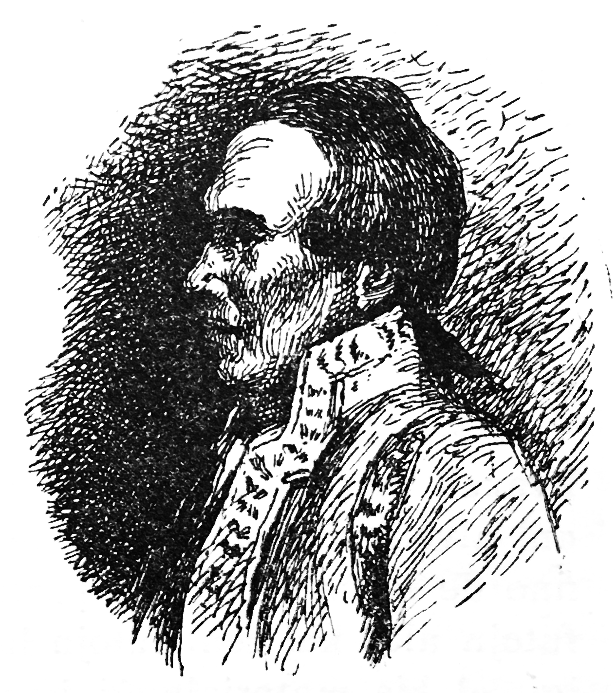

Kion ili vidis en la lando Eldorado.
Kakambo konfesis al sia gastiganto sian tutan scivolemon; la gastiganto diris al li: «Mi estas tre nescia, kaj tio al mi ne domaĝas; sed ni havas ĉi tie retiriĝintan el la kortego maljunulon, kiu estas la plej klera el la reĝlando, kaj la plej malkaŝema.» Li tuj kondukas Kakambo ĉe la maljunulon. Kandid ludis la rolon nur de duaranga persono, kaj akompanis sian serviston. Ili eniris tre simplan domon, ĉar la pordo estis nur el arĝento, kaj la paneloj estis nur el oro, sed prilaboritaj kun tiom da bongusto, ke la plej riĉaj paneloj ne superis ilin. La antaŭĉambro, estas vere, estis inkrustita nur el rubenoj kaj smeraldoj, sed la ordo laŭ kiu ĉio estis aranĝita, bone kompensis tiun tre grandan simplecon.
La maljunulo akceptis la du fremdulojn, petante, ke ili sidiĝu sur sofon, remburitan per plumoj de kolibroj, kaj antaŭ ilin metis likvorojn en vazoj el diamanto; poste li kontentigis ilian scideziron per jenaj paroloj:
«Mi havas la aĝon de cent sepdek du jaroj, kaj mi eksciis de mia mortinta patro, kiu estis subkavaliro de la reĝo, pri la mirigaj revolucioj okazintaj en Peruvio, kiujn li ĉeestis. La reĝlando ĉi-tiea estis la malnova patrio de la Inkasoj (↓1), kiuj eliris el ĝi tre malsingarde por iri milite submeti unu mondparton, kaj kiuj fine estis formortigataj de la Hispanoj.
«La princoj de ilia familio, kiuj restis en sia naskiĝlando, estis pli saĝaj; ili ordonis, laŭ la konsento de la nacio, ke neniu loĝanto eliru el nia malgranda reĝlando; kaj tio konservis al ni nian senpekecon kaj nian feliĉon. La Hispanoj havis malklaran scion pri ĉi tiu lando, ili nomis ĝin Eldorado, kaj iu Anglo, nomita kavaliro Rali (↓2), eĉ proksimiĝis al ĝi antaŭ proksimume cent jaroj; sed, tial ke ni estas ĉirkaŭitaj per nealireblaj rokoj kaj profundegoj, ni ĉiam ĝis nun estis ŝirmataj kontraŭ la rabemo de la nacioj el Eŭropo, kiuj havas nekompreneblan pasiegon por la ŝtonoj kaj por la koto de nia tero, kaj kiuj, por ilin akiri, mortigus nin ĉiujn ĝis la lasta.»
Longa estis la interparolo; ĝi temis pri la moroj, pri la virinoj, pri la publikaj spektakloj, pri la artoj. Fine Kandid, kiu ĉiam havis emon por la metafiziko, demandis pere de Kakambo ĉu en la lando ekzistas religio.
La maljunulo iomete ruĝiĝis. «Nu! li diris, kiel vi povas pri tio dubi? Ĉu vi rigardas nin kiel maldankemulojn?» Kakambo humile demandis, kiu religio estas en Eldorado. La maljunulo denove ruĝiĝis. «Ĉu povas ekzisti du religioj? li diris; ni havas, mi kredas, la ĉies religion; ni adoras Dion de la vespero ĝis la mateno.
― Ĉu vi adoras nur unu Dion? diris Kakambo, kiu ĉiam divenis la dubojn de Kandid.
― Memkompreneble, diris la maljunulo, ne ekzistas du, nek tri, nek kvar. Mi konfesas al vi, ke la homoj el via mondo faras tre strangajn demandojn.

Kakambo
Kandid nelaciĝis demandadi la bonan maljunulon; li volis scii kiel oni preĝis Dion en Eldorado. «Ni ne preĝas al li, diris la bona kaj respektinda saĝulo; ni ne bezonas peti ion al li; li donis al ni ĉion necesan; ni senĉese dankas al li.» Kandid havis la scivolon vidi pastrojn; li demandigis, kie ili troviĝas. La bona maljunulo ridetis. «Miaj amikoj, l diris, ni ĉiuj estas pastroj; la reĝo kaj ĉiuj familiestroj ĉiusemajne solene kantas dankajn kantojn; kaj kvin aŭ ses mil muzikistoj akompanas ilin.»
― Nu! ĉu do vi ne havas monaĥojn, kiuj instruas, disputas, regas, intrigas kaj bruligas la homojn, kiuj ne havas saman opinion kiel ili?
― Necesus por tio, ke ni estu frenezaj, diris la maljunulo; ni ĉiuj ĉi tie estas samideanoj kaj ne komprenas, kion vi diras pri viaj monaĥoj.
Ĉe ĉiuj tiuj paroloj Kandid statis kvazaŭ ekstaze kaj diris al si pense: «Ĉi tio tre diferencas je tio, kio ekzistas en Vestfalio kaj en la kastelo de lia barona moŝto: se nia amiko Panglos estus vidinta Eldoradon, li ne plu dirus, ke la kastelo de Thunder-ten-tronckh estis tio, kio estis plej bela sur la tero; estas ja certe, ke oni devas vojaĝi.»
Post tiu longa interparolado, la bona maljunulo pretigis sesŝafan kaleŝegon, kaj donis dek du el siaj servistoj al la vojaĝantoj por konduki ilin al la kortego. «Senkulpigu min, li diris, se mia maljuneco senigas min je la honoro akompani vin. La reĝo akceptos vin laŭ maniero, pri kiu vi ne estos malkontentaj, kaj vi sendube indulgos la morojn de la lando, se estas kelkaj, kiuj malplaĉas al vi.»
Kandid kaj Kakambo enkaleŝiĝis; la ses ŝafoj kvazaŭ flugis, kaj en malpli ol kvarhora veturado oni alvenis ĉe la palaco de la reĝo, lokita en iu fino de la ĉefurbo. La portalo estis du cent dudek futojn alta kaj cent futojn larĝa; estas neeble klarigi, el kia materialo ĝi konsistis. Estas evidente, ke ĝi eksterordinarege superis la ŝtonojn kaj sablon, kiujn ni nomas oro kaj gemoj.
Dudek belaj deĵorantinoj akceptis Kandid kaj Kakambo ĉe ilia elkaleŝiĝo, kondukis ilin en banĉambrojn, vestis ilin per roboj teksitaj el kolibra lanugo; poste la grandoficiroj kaj grandoficirinoj de la Reĝeco kondukis ilin en la apartamenton de Lia Reĝa Moŝto, meze inter du vicoj, ĉiu el mil muzikistoj, laŭ la kutima maniero. Kiam ili proksimiĝis al la trona salono, Kakambo demandis al iu grandoficiro kiel oni devas fari por saluti Lian Reĝan Moŝton: ĉu oni sin ĵetas genue aŭ ventre surteren; ĉu oni metas la manojn sur la kapon aŭ sur la postaĵon; ĉu oni lekas la polvon de la planko; unuvorte, kia estas la ceremonio. «La kutimo, diris la grandoficiro, estas ĉirkaŭbraki la reĝon kaj kisi lin sur ambaŭ vangojn.» Kandid kaj Kakambo sin ĵetis sur la kolon de Lia Reĝa Moŝto, kiu akceptis ilin kun la tuta eleganta facileco, kiun oni povas imagi kaj ĝentile invitis ilin por vespermanĝi.
Dume oni travidigis al ili la urbon, la publikajn konstruojn, kies supro atingis la nubojn, la vendejojn milkolone ornamitajn, la fontanojn kun pura akvo, la fontanojn kun roza akvo, tiujn kun likvoroj el sukerkanoj, kiuj konstante fluis, starante sur grandaj placoj, pavimitaj per ia speco de gemoj, kiuj eligis odoron similan al tiu de la kariofilo kaj de la cinamo. Kandid petis, ke oni montru al li la kortumon, la parlamenton; oni diris, ke da ili ne ekzistas, kaj ke oni neniam pledis. Li demandis, ĉu estas malliberejoj, oni diris al li, ke ne. Kio pli surprizis lin, kaj kio plej plezurigis lin, tio estis la palaco de la sciencoj, en kiu li vidis galerion dumilpaŝe longan, tute plenan je matematikaj kaj fizikaj instrumentoj.
Trarigardinte, dum la posttagmezo, proksimume la milonan parton de la urbo, ili estis rekondukataj al la reĝo. Kandid altabliĝis inter Lia Reĝa Moŝto, sia servisto Kakambo kaj pluraj sinjorinoj. Neniam oni tiom bone manĝis, kaj neniam la reĝo estis pli sprita ol dum la vespermanĝo. Kakambo klarigis la spritajn vortojn de la reĝo al Kandid, kaj, malgraŭ la tradukiĝo ili restis spritaj. El ĉio, kio mirigis Kandid, tio ne estis la malplej miriga.
Ili restis monaton en tiu gastejo. Kandid ne ĉesis diri al Kakambo: «Estas vere, mia amiko, mi rediras, ke la kastelo, kie mi naskiĝis, ne indas je la lando, kie ni estas; sed F-ino Kunegond forestas kaj vi sendube havas en Eŭropo iun amatinon. Se ni restas ĉi tie, ni estos nur same bonstataj kiel la aliaj; male, se ni revenos en nian mondon nur kun dek du ŝafoj ŝarĝitaj per ŝtonoj el Eldorado, ni estos pli riĉaj ol ĉiuj reĝoj kune, ni ne plu bezonos timi inkvizitorojn, kaj ni facile povos repreni F-inon Kunegond.»
Tiu parolo plaĉis al Kakambo: oni tiom ŝatas migradi, akiri famon ĉe siaj samgentanoj, fanfaroni pri tio, kion oni vidis dum siaj vojaĝoj, ke la du feliĉuloj decidis ne plu esti feliĉaj kaj peti sian liberiĝon de Lia Reĝa Moŝto.
«Vi faras malsaĝaĵon, diris al ili la reĝo, mi bone scias, ke mia lando estas negrava; sed, kiam mezbone oni estas ie, oni tie devas resti; mi certe ne havas la rajton teni fremdulojn; tio estas tiranio, kiu forestas el niaj moroj, el niaj leĝoj: ĉiuj homoj estas liberaj; foriru, kiam al vi plaĉos, sed la eliro estas tre malfacila. Estas neeble iri kontraŭ la fluo de la rapida rivero, per kiu kvazaŭ mirakle vi alvenis, kaj kiu fluas sub rokaj arkaĵoj. La montoj, kiuj ĉirkaŭas mian tutan landon, estas dek mil futojn altaj kaj staras kiel muroj: ĉiu el ili larĝe okupas spacon de pli ol dek mil mejloj; oni povas malsupreniri ilin nur laŭ krutegoj. Tamen, ĉar vi nepre volas foriri, mi ordonos al la intendanto de la maŝinoj, ke li konstruu unu, kiu povos komforte transporti vin. Kiam oni estos forkondukinta vin trans la montojn, neniu povos akompani vin: miaj regatoj ja ĵuris neniam eliri la ĉirkaŭlimon, kaj ili estas tro saĝaj por rompi sian ĵuron. Cetere vi petu de mi ĉion, kio plaĉos al vi.»
― Ni petas de Via Reĝa Moŝto, diris Kakambo, nur kelke da ŝafoj ŝarĝotaj per nutroj, ŝtonoj kaj per la koto el la lando.
La reĝo ridis. «Mi ne komprenas, li diris, kian emon havas la Eŭropanoj por nia flava koto; sed da ĝi kunportu tiom, kiom vi volos, kaj ĝi al vi utilu.»
Tuj li ordonis al siaj inĝenieroj, ke ili pretigu maŝinon por suprenlevi tiujn du eksterordinarajn homojn ekster la reĝlandon. Tri mil bonaj fizikistoj eklaboris; la maŝino estis preta post dekkvin tagoj kaj ne kostis pli ol dudek milionojn da sterlingaj funtoj, en la landa mono. Sur la maŝinon oni metis Kandid kaj Kakambo; aldone estis du grandaj ruĝaj ŝafoj selitaj kaj briditaj por servi al ili kiel rajdobestoj, kiam ili estos transirintaj la montojn, dudek ŝarĝoŝafoj ŝarĝitaj per nutroj, tridek, kiuj portis donacojn el tio, kion la lando havas plej kurioza, kaj kvindek ŝarĝitaj per oro, gemoj kaj diamantoj. La reĝo ameme kisis la du vagulojn.
Estis bela spektaklo ilia foriro kaj la maniero, laŭ kiu ili estis suprenlevataj, ili kaj iliaj ŝafoj, ĝis la supro de l' montoj. La fizikistoj adiaŭis ilin, post kiam ili estis en sendanĝereco, kaj Kandid ne plu havis alian deziron kaj celon ol iri proponi siajn ŝafojn al F-ino Kunegond.
«Ni havas, li diris, sufiĉon por pagi al la guberniestro de Bonaero, se F-ino Kunegond estas vendotaksigota. Ni iru al Kajeno, ne enŝipiĝu, kaj poste ni vidos, kiun reĝlandon ni povos aĉeti.»